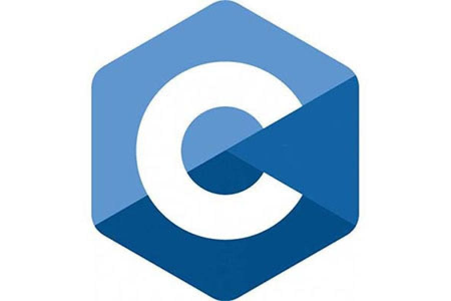

(клікнувши по мові - перейде до її опису)


|
Рейтинг | Проголосувало | Логотип | |
|---|---|---|---|---|
| JavaScript | 67.7% | 60 930 | |
|
| HTML/CSS | 63.5% | 57 150 | |
|
| Python | 67.7% | 60 930 | |
|
| C# | 67.7% | 60 930 |  | |
JavaScript — динамічна, об'єктно-орієнтована прототипна мова програмування. Реалізація
стандарту ECMAScript. Найчастіше використовується для створення сценаріїв вебсторінок,
що надає можливість на боці клієнта (пристрої кінцевого користувача) взаємодіяти з
користувачем, керувати браузером, асинхронно обмінюватися даними з сервером,
змінювати структуру та зовнішній вигляд вебсторінки.
JavaScript класифікують як прототипну (підмножина об'єктно-орієнтованої),
скриптову мову програмування з динамічною типізацією. Окрім прототипної,
JavaScript також частково підтримує інші парадигми програмування (імперативну та частково
функціональну)
і деякі відповідні архітектурні властивості, зокрема: динамічна та слабка типізація,
автоматичне керування пам'яттю,
прототипне наслідування, функції як об'єкти першого класу.
HTML(англ. HyperText Markup Language — мова розмітки гіпертексту) — це мова тегів,
засобами якої здійсюється розмічання веб-сторінок для мережі Інтернет. Веб-браузери
отримують HTML-документи з веб-сервера або з локальної пам'яті й передають документи
в мультимедійні веб-сторінки. HTML описує структуру
веб-сторінки семантично і спочатку включені сигнали для зовнішнього вигляду документа
CSS(англ. Cascading Style Sheets,
укр. Каскадні таблиці стилів) — це спеціальна мова стилю сторінок, що
використовується для опису їхнього зовнішнього вигляду. Самі ж сторінки написані
мовами розмітки даних.
CSS є основною технологією всесвітньої павутини
, поряд із HTML та JavaScript. Найчастіше CSS використовують для
візуальної презентації сторінок, написаних HTML та XHTML, але формат CSS
може застосовуватися до інших видів XML-документів.
(найчастіше вживане прочитання — «Па́йтон», запозичено назву з британського шоу Монті Пайтон) — інтерпретована об'єктно-орієнтована мова програмування високого рівня зі строгою динамічною типізацією. Розроблена в 1990 році Гвідо ван Россумом. Структури даних високого рівня разом із динамічною семантикою та динамічним зв'язуванням роблять її привабливою для швидкої розробки програм, а також як засіб поєднування наявних компонентів. Python підтримує модулі та пакети модулів, що сприяє модульності та повторному використанню коду. Інтерпретатор Python та стандартні бібліотеки доступні як у скомпільованій, так і у вихідній формі на всіх основних платформах. В мові програмування Python підтримується кілька парадигм програмування, зокрема: об'єктно-орієнтована, процедурна, функціональна та аспектно-орієнтована.
Java (вимовляється Джава) — об'єктно-орієнтована мова програмування, випущена 1995 року
компанією «Sun Microsystems» як основний компонент платформи Java. З 2009
року мовою займається компанія
«Oracle» яка того року придбала «Sun Microsystems»
. В офіційній реалізації Java-програми компілюються у байт-код, який при виконанні
інтерпретується віртуальною машиною для конкретної платформи.
«Oracle» надає компілятор Java та віртуальну машину Java, які
задовольняють специфікації Java Community Process, під ліцензією
GNU General Public License.
C#(вимовляється Сі-шарп) — об'єктно-орієнтована мова програмування з безпечною
системою типізації для платформи .NET. Розроблена Андерсом Гейлсбергом, Скотом
Вілтамутом та Пітером Гольде під егідою Microsoft Research (належить Microsoft).
Синтаксис C# близький до С++ і Java. Мова має строгу статичну типізацію,
підтримує поліморфізм, перевантаження операторів, вказівники на функції-члени класів,
атрибути, події, властивості, винятки, коментарі у форматі XML. Перейнявши багато від
своїх попередників — мов С++, Object Pascal, Модула і Smalltalk — С#, спираючись на
практику їхнього використання, виключає деякі моделі, що зарекомендували себе як
проблематичні при розробці програмних систем, наприклад, мова С#,
на відміну від C++, не передбачає множинне успадкування класів.